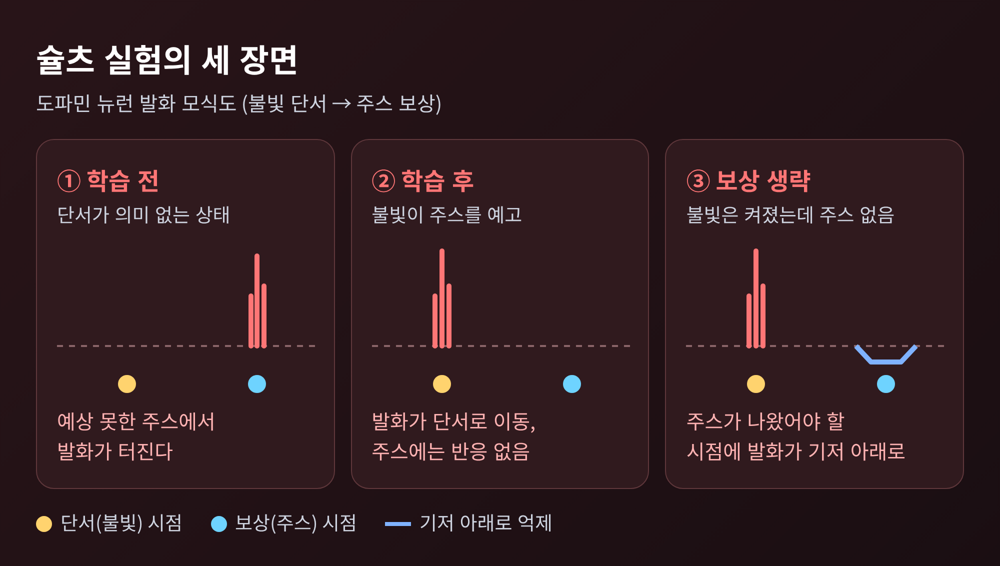
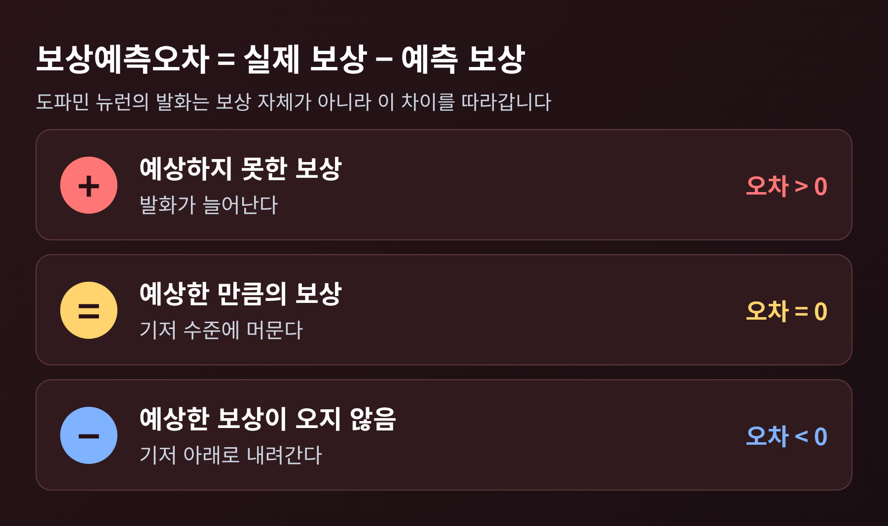
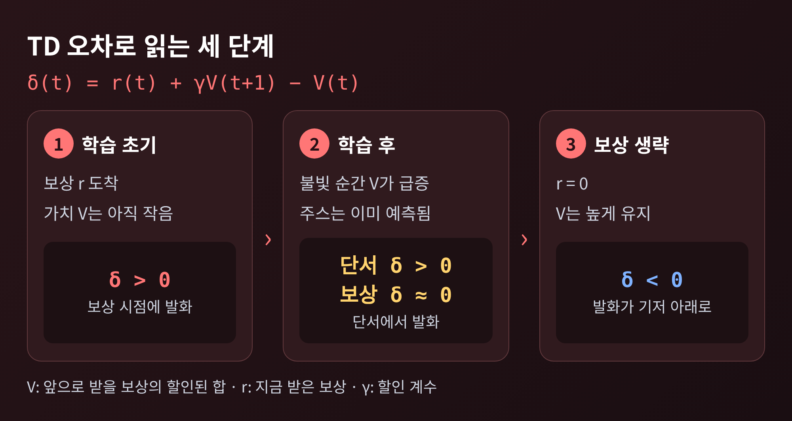
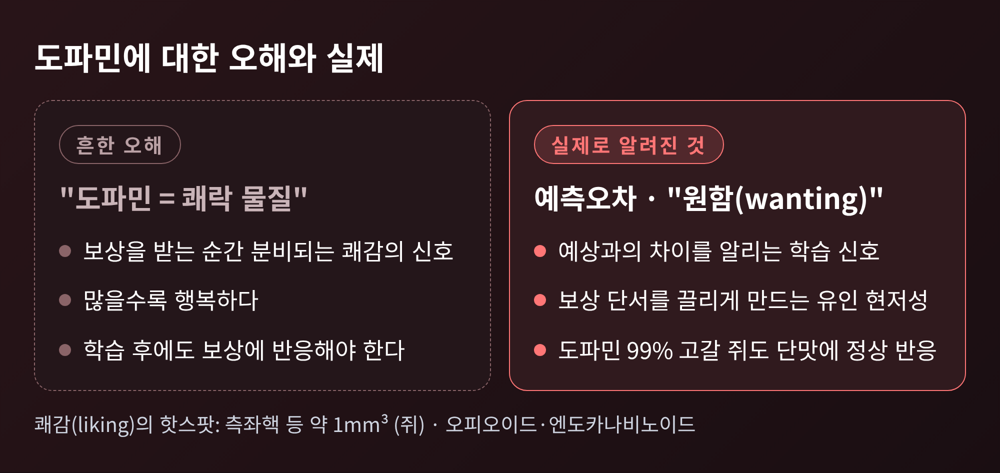
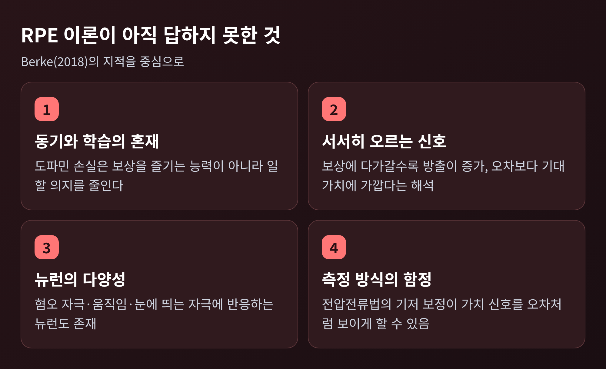

도파민 보상예측오차 원리 — 뇌는 보상이 아닌 예상과의 차이를 읽는다

오늘은 도파민과 보상예측오차에 대해 이야기해 보려 합니다.
도파민 뉴런은 보상을 받을 때가 아니라 보상이 예상보다 좋거나 나쁠 때 반응합니다. 이 차이가 곧 뇌의 학습 신호이고, 컴퓨터 과학의 시간차 학습과 같은 구조를 지닙니다.
슐츠의 원숭이 실험에서 출발해 이 원리를 순서대로 풀고, '도파민은 쾌락 물질'이라는 흔한 오해와 이론의 한계까지 정리해 보겠습니다.
■ 슐츠의 원숭이 실험이 보여준 것
1997년 3월 《사이언스》에 실린 논문 〈A neural substrate of prediction and reward〉가 이야기의 출발점입니다. 저자는 볼프람 슐츠, 피터 다얀, 몬터규입니다.
엄밀히 말하면 이 논문은 슐츠가 영장류에서 오랫동안 기록해 온 도파민 뉴런 연구에 강화학습 이론을 연결해 정리한 글입니다. 실험 자체는 그 이전부터 쌓여 있었습니다.
과제는 단순했습니다. 원숭이는 작은 불빛이 켜지면 레버를 건드립니다. 보상은 입에 들어가는 소량의 과일 주스입니다. 연구진은 이 과정에서 도파민 뉴런의 발화를 기록했습니다.
결과는 세 장면으로 요약됩니다.
첫째, 학습 전입니다. 예고 없이 주스가 나오면 도파민 뉴런이 짧게 폭발적으로 발화합니다.
둘째, 학습 후입니다. 불빛이 주스를 예고한다는 것을 익히면 반응이 불빛이 켜지는 순간으로 옮겨 갑니다. 정작 주스가 들어올 때는 더 이상 반응하지 않습니다.
셋째, 보상 생략입니다. 불빛은 켜졌는데 주스가 나오지 않으면, 주스가 나왔어야 할 바로 그 시점에 발화가 평소 수준 아래로 뚜렷하게 떨어집니다. 논문은 도파민 뉴런의 55~80%가 이런 반응을 보였고 비교적 균질했다고 기술합니다.

슐츠가 처음부터 이런 결과를 기대한 것은 아니었습니다. 브레인팩츠의 소개에 따르면 그는 도파민이 움직임과 관련 있다고 보고 원숭이가 손을 뻗을 때의 발화를 예상했습니다. 그러나 뉴런은 동작이 아니라 보상이 드러나는 순간에 반응했고, 같은 간식에 익숙해지자 잠잠해졌습니다. 이 단서를 심리학의 학습 이론과 이어 붙인 것이 이후의 흐름입니다.
■ 도파민 뉴런은 '차이'를 부호화합니다
핵심은 한 줄로 쓸 수 있습니다. 보상예측오차는 실제로 받은 보상에서 예측한 보상을 뺀 값입니다.
예전에는 도파민이 보상을 받는 순간 분비되는 쾌감의 신호로 여겨졌습니다. 지금은 예상과 현실의 간극을 알리는 신호로 읽힙니다.
- 예상하지 못한 보상이 오면 오차가 양수이고, 발화가 늘어납니다.
- 예상한 만큼의 보상이 오면 오차가 0이고, 발화는 기저 수준에 머뭅니다.
- 예상한 보상이 오지 않으면 오차가 음수이고, 발화가 기저 아래로 내려갑니다.

이 신호가 쓸모 있는 이유는 학습에 있습니다. 오차가 크다는 것은 세상이 내 예측과 다르게 돌아갔다는 뜻이므로, 예측을 고쳐야 한다는 알림이 됩니다. 오차가 없으면 고칠 것이 없습니다. 심리학의 레스콜라-와그너 이론이 말하는 '오차가 학습을 이끈다'는 생각이 신경세포의 언어로 옮겨진 셈입니다.
슐츠 연구진의 후속 정리에 따르면 도파민 반응은 보상의 양과 확률이 커질수록 강해지고, 보상이 늦게 올수록 약해집니다. 원숭이가 보이는 선호의 순위도 따라갑니다. 단순한 켜짐·꺼짐 신호라기보다 '얼마나 가치 있는가'를 반영하는 신호입니다.
■ 시간차 학습(TD)과 만나다
이 관찰에 수학적 틀을 준 것이 시간차 학습입니다. 1988년 서턴이 《머신러닝》에 발표한 방법으로, 최종 결과가 나올 때까지 기다렸다가 예측과 대조하는 대신 '연속한 두 예측 사이의 차이'로 학습합니다. 메모리와 계산량이 적으면서도 예측이 더 정확한 경우가 많다고 논문은 주장합니다.
슐츠·다얀·몬터규 논문은 TD 오차를 이렇게 적습니다.
δ(t) = r(t) + γV(t+1) − V(t)
V는 앞으로 받을 보상의 할인된 합, r은 지금 받은 보상, γ는 가까운 보상을 더 크게 치는 할인 계수입니다. 논문은 도파민 뉴런의 출력을 이 δ에 기저 발화율을 더한 값으로 제안합니다.
수식을 실험에 대입하면 세 장면이 그대로 풀립니다.
- 학습 초기에는 V가 작습니다. 주스가 오는 순간 r이 커서 δ가 양수가 되고, 보상 시점에 발화합니다.
- 학습이 끝나면 불빛이 켜지는 순간 V가 갑자기 커집니다. 이 변화가 δ로 잡혀 단서에서 발화하고, 이미 예측된 주스는 δ가 0에 가깝습니다.
- 주스가 생략되면 r은 0인데 V는 높았으므로 δ가 음수가 되어 발화가 가라앉습니다.

강화학습 알고리즘이 계산하던 값과 원숭이의 뉴런이 보인 값이 맞아떨어졌다는 점이 이 연구의 파급력이었습니다. 슐츠, 다얀, 레이 돌란은 이 업적으로 2017년 브레인 프라이즈를 받았습니다. 2020년 《네이처》에는 한 걸음 더 나아간 결과가 실렸습니다. AI 연구의 분포형 강화학습을 신경과학에 들여온 이 논문은 마우스 복측피개영역 뉴런 기록을 근거로, 뇌가 보상 예측을 평균 하나가 아니라 확률분포로 표현한다는 가설을 제시했습니다.
■ 도파민은 쾌락 물질이 아닙니다
흔한 오해가 하나 있습니다. 도파민을 '행복 호르몬', '쾌락 물질'로 부르는 설명입니다. 앞의 실험만 봐도 맞지 않습니다. 학습이 끝나면 주스는 그대로 입에 들어오는데, 도파민 반응은 보상 시점에서 사라졌기 때문입니다.
미시간대 베리지 연구실은 쾌감 자체인 '좋아함(liking)'과 동기인 '원함(wanting)'을 구분합니다. 도파민이 맡는 것은 원함, 곧 보상과 이어진 단서를 끌리는 대상으로 만드는 '유인 현저성'입니다. 쾌감의 느낌은 쥐 기준 약 1세제곱밀리미터 크기의 측좌핵 등 '쾌감 핫스팟'에서 오피오이드와 엔도카나비노이드가 담당합니다.
근거는 실험입니다. 1998년 베리지와 로빈슨의 연구에서는 측좌핵과 선조체의 도파민을 최대 99%까지 고갈시킨 쥐도 단맛과 쓴맛에 정상적인 표정 반응을 보였습니다. 반대로 도파민이 많은 유전자 변형 마우스는 단 보상을 더 원했지만, 혀를 내미는 쾌감 반응은 대조군과 같았습니다.

이 구분은 중독을 이해하는 실마리가 됩니다. 약물은 관련 단서를 지나치게 높이 평가하도록 시스템을 가르칠 수 있고, 약물을 더 원하면서도 얻는 쾌감은 줄어드는 일이 생길 수 있습니다. 이런 민감화는 약물을 끊고 수년이 지나도 이어질 수 있다고 합니다.
■ 아직 풀리지 않은 부분
보상예측오차 이론은 널리 받아들여졌지만 완결된 이야기는 아닙니다. UCSF 조슈아 버크는 2018년 《네이처 뉴로사이언스》에서 이 틀만으로는 도파민을 설명하기에 부족하다고 짚었습니다.
- 동기와 학습의 혼재. 도파민을 잃으면 보상을 즐기는 능력이 아니라 보상을 위해 일할 의지가 줄어듭니다. 도파민은 학습뿐 아니라 동기에도 관여합니다.
- 서서히 오르는 신호. 측좌핵에서는 보상에 가까워질수록 도파민 방출이 점차 올라갑니다. 버크는 이를 오차보다 '기대 가치'에 가까운 신호로 봅니다.
- 뉴런의 다양성. 일부 도파민 뉴런은 혐오 자극, 움직임, 눈에 띄는 자극에 반응합니다. 부위마다 역할도 다릅니다.
- 측정 방식의 함정. 전압전류법의 기저 보정이 가치 신호를 오차 신호처럼 보이게 할 수 있습니다.
슐츠 쪽 리뷰도 일부 쟁점을 인정합니다. 노력이 도파민 반응을 줄이는지는 연구마다 결과가 엇갈리고, 전극 종류에 따라 신호의 크기가 달라집니다. 학습 신호라는 핵심은 널리 받아들여지고 있으나, 그것이 도파민의 전부인지는 아직 열려 있는 질문입니다.

정리하면 이렇습니다.
도파민 뉴런이 알리는 것은 '보상이 있었다'가 아니라 '예상과 달랐다'는 사실입니다. 그 어긋남이 뇌에게는 가장 값진 정보이고, 시간차 학습이라는 수학과 같은 방식으로 예측을 고쳐 나갑니다.
"도파민은 기쁨이 아니라, 예상이 틀렸다는 소식이다."
다음에 무언가를 간절히 바라는 마음이 일 때 그것이 즐거움에서 오는지, 예측이 만든 이끌림에서 오는지 한 번쯤 살펴보시면 좋겠습니다. 즐거움과 원함은 생각보다 자주 서로 다른 길을 걷습니다.